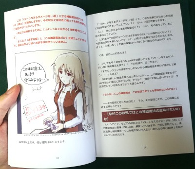
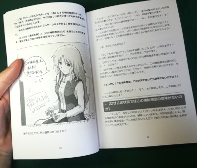
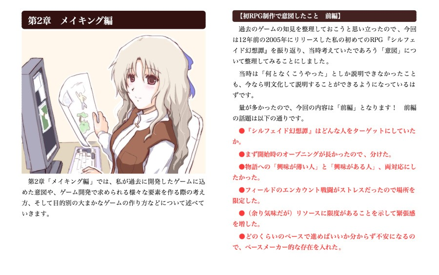

■2020-08-02 (日) 『ゲーム開発者の地図』 紙版が発売！▼
このたび、私が書いた本
『ゲーム開発者の地図 ～20年の個人開発で学んだこと～』
の【紙の本】を発売いたしました！
↓お買い上げはこちらから！ 紙の版は【372ページ】となっております。
| ◆フルカラー本 Amazonペーパーバック （￥3,660）  | ◆モノクロ本 (販売終了しました) （￥2,500）  | ◆Kindle 電子書籍版 （￥1,080）  （スマホ/タブレット/PC） |
◆こちらが紹介動画です↓
紙の本のバージョンとしては「フルカラー版」と「モノクロ版」の2つがございます。
フルカラーで作ってみたら値段が高すぎて目玉飛び出たので
お手頃価格のモノクロ版もご用意しました。
【どんな内容？】
私がゲームを開発するときに「どんな意図をもって作っているのか」、
「効果的だと考えている手段」や「完成させる作り方とは？」、
そういった話題のゲーム開発話を色々まとめた一冊です！
この開発日誌で評判のよかった記事をまとめたもので、
開発者でない方にもそこそこお楽しみいただけるかもしれません。
もっぱらRPGのゲームデザインの話が多いとのことです。
初めての人にはゲーム開発における一つの考え方を提示し、
熟練者の人にはこれまでの経験を明文化する一助となったり、
色々言われて苦しいときのモチベーション回復の助けになるかも！
という感じのことがレビューに書いてあったのですが
書いた私自身には効用がないので分かりません。悲しい。
ほか、皆さまのご感想が気になる人はこちらからどうぞ↓
【ツイッターでの皆さまのご感想まとめ】
そしてこの本、（知り合いを含む）ゲーム開発会社さまなどでも簡単な教材の一つとして
使ってくださっているというありがたいお話もうかがっておりますので、
そういった需要にもある程度お応えできると思います。
Kindleだと全員買わないと読みにくいですが、
これなら1～2冊で回し読み可能ですからね！
個人的には皆さんに電子版買っていただくのが一番得なので、
もちろん電子版で買ってくださっても構いません！
という感じで電子版よりはだいぶお高いと思いますが、
もし紙版が欲しい方は、よければぜひどうぞ！
どれも1本の収益は似たような感じに設定されているので、どれが買われても喜びます！
2020-08-02 (日)  カテゴリ: 開発日誌
カテゴリ: 開発日誌
 カテゴリ: 開発日誌
カテゴリ: 開発日誌